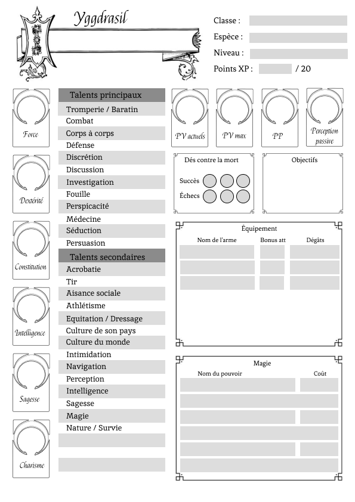
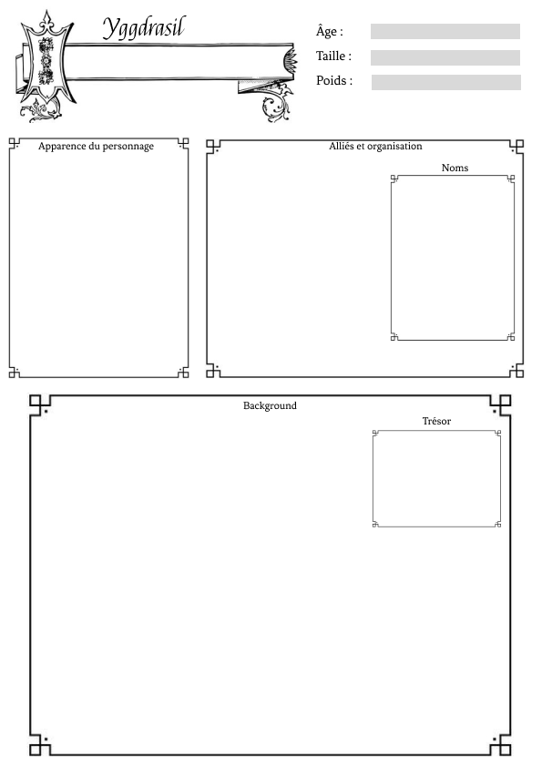
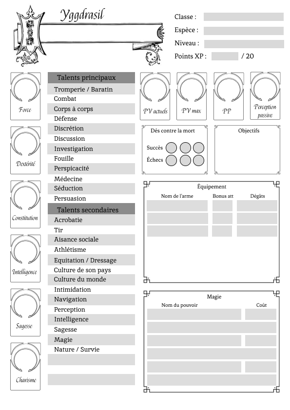
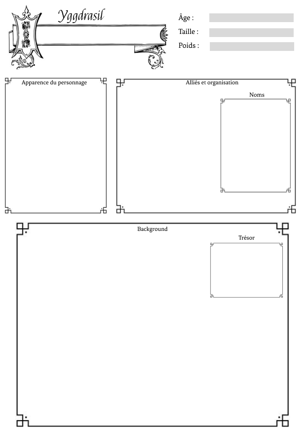

@rotting_sweet

Yggdrasil


Voici à quoi ressemble la fiche de personnage d'un PJ :
 
Le reste est très homebrew, donc c'est à moi qu'il faudra faire confiance hehehe
 
Les règles de jeu sont très homebrew, donc n'ont pas de bases fixes et universelles, comme ça aurait été le cas si elle était basée sur les règles de DnD.
Il n'y a pas de classes prédéterminée, elles sont elles aussi homebrew.
Néanmoins, le choix de votre espèce vous donnera des avantages dans certaines compétences :
- Démon : Persuation +2
- Sirène : Séduction +2
- Géant : Défense +2
- Dragonborn : Magie +2
- Bête de l'ombre : Intimidation +2
- Halflin : Discrétion +2
- Goblin : Investigation +2
- Golem : Nature - Survie +2
- Humain : Perception +2
- Ange : Tromperie - Baratin +2
- Elfe : Acrobatie +2
- Fée : Nature - Survie +1 | Discrétion +1
- Nymphe : Nature - Survie +1 | Séduction +1
- Grung : Nature - Survie +2
- Harengon : Nature - Survie +2
- Centaure : Équitation - Dressage +3
Le reste est très homebrew, donc c'est à moi qu'il faudra faire confiance hehehe